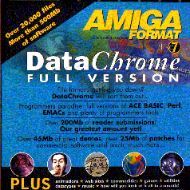

We've recently bought a house. Here's the new address:
73 Second Avenue, Klemzig, SA, 5087, AustraliaOur home phone number is still:
+61 8 8266 6508
Simon Goodwin tells me that Amiga Format's October 1999 issue will have an article about Amiga BASICs, and that ACE will be discussed.
Best regards
David Benn, August 7 1999
I recently lost my FTP site space at Vision Internet which is not surprising as I haven't worked there for 2 years! Thanks to Roy Austen and the crew at Vision for letting me have the space for so long).
I've collected together and uploaded these files to Aminet.
They should appear in
dev/basic
as ace_ftp.lha
sometime soon. The archive is about 4 megs but does not include the
dist directory since that was superceded by the GPL
distribution archive.
Thanks to J. Tervo for converting a Zip file to LhA format for uploading.
Here's the readme file that went with the uploaded archive:
Short: ACE BASIC compiler FTP site files
Uploader: David Benn, dbenn@camtech.net.au
Author: David Benn and many others
Type: dev/basic
This ZIP archive contains the ACE FTP site (now discontinued) files except the ACE distribution files since the latest versions of these are in a separate archive, the ACE GPL release: dev/basic/ace_final.lha. In some cases, more recent versions of some of the files in this FTP archive may be found in the ACE GPL release archive.
It was pointed out to me soon after I'd uploaded the final ACE archive to Aminet that the enclosed Sozobon C compiler archive was partially corrupted. You can obtain this archive separately from Aminet (as dev/c/ Sozobon-C.lha) anyway, and I only included it for convenience. I expect that future development of ACE would involve use of an ANSI C compiler such as SAS/C.
BTW, you can probably get a newer version of AIDE than the one
included in ace_final.lha from Aminet's
dev/basic.
Finally, after much procrastination on my part, the ACE source code has
been released under the Gnu Public Lisence. I uploaded it to
Aminet
on October 5 1998 and asked for it to be placed in
dev/basic
as ace_final.lha.
Here's the contents of the README_FIRST file at the top level of the archive:
Well, it's finally happened. The ACE source code has been released under the Gnu Public Lisence. In fact, the complete distribution has. This represents version 2.4 of the compiler, and the later update to db.lib (version 2.61). See docs/history for the details. The primary ACE document (ace.doc/ace.fmt/ace.guide) has been annotated with recent changes, e.g. re: contact information.
I developed ACE between November 1991 and September 1996. In preparing the archive I was reminded again of how much work I've put into this project. It was a labour of love, which was driven by my desire for simplicity and power in a programming language, but for a variety of reasons I moved on to other things. If you want to know more about this, go to my web page to see an interview with me a couple of years ago re: the state of ACE, the Amiga, and me.
ACE was the first large C project I worked on and I learned so much, but made plenty of mistakes along the way.
There are a number of things I feel I should apologise for.
First, for the time it's taken me to make the ACE source code available. For a long time, I wasn't sure that I would do so. But since I'm not working on it any longer, I want others to have the chance to do this if they wish, but not to exploit it by making money from ACE without sharing the benefits with others. That's what the GPL gives us.
Second, the source code is a mixture of C and assembler, mostly C. The bad news is that it's in K&R C rather than ANSI C. I developed ACE using an old but stable C compiler: Sozobon C v1.01. See the ZC directory. I had plans to convert it to ANSI C but never got around to it. I recall seeing at least one freeware utility for doing this conversion however.
Third, my coding style has changed considerably over the last few years, and you'll notice the evolution in some of the ACE sources. My commenting tends to be more fanatical nowadays also, although it's adequate in most of the ACE sources.
Fourth, there's no makefiles. I used a few scripts (see make directory) to generate the compiler and libraries. This works fine, but compared to what I'm used to now, it's primitive. It wouldn't be hard to write some makefiles for ACE though.
Fifth, no source control system was used. I just kept each version in separate directories.
Sixth, there's a single common header file for the whole compiler. These days I generally use one header per C file and conditional compilation.
Lastly, there's one small object module (src/lib/obj/LoadIFFToWindow.o) to which there is no source code. That's because it's a shared library stub for ilbm.lib (which ACE regenerates at run-time). It's used in one place (src/lib/c/iff.c)
That's all the negative stuff I can think of. The good news is that the source code compiles and produces a compiler and libraries that work. I'm not pretending that there are no bugs though. I didn't use bug tracking software, so another task I should carry out is the conversion of my paper-based problem logs to electronic format. I didn't want to delay releasing the ACE source any longer in order to do this.
I also have paper-based plans for how ACE could be improved and expanded, which I'm also willing to make available (after suitable conversion) if there's demand for it.
I am willing to make this kind of information available and to answer questions about the ACE source code and about ACE in general.
I need to thank Daniel Seifert for supplying the necessary guilt level to release the ACE source code and I'd like to thank everyone who's been involved with ACE since it came into being eight years ago. It was a wonderful experience. I came to know many fine people in the Amiga Community during the course of the project. I also want to thank my wife Karen, for putting up with me during those years when I lived, breathed, and ate ACE.
There's nothing much left to say except that if anyone decides to keep developing ACE, or use the source code for some other purpose, I hope you spend more time thanking me than cursing me and that you send me some mail letting me know what you're doing.
Enjoy.
Best regards
David Benn, October 5 1998
dbenn@camtech.net.au
http://www.adelaide.net.au/~dbenn/
6 Stacey Crescent, Klemzig, South Australia, 5087
Karen and I moved from Launceston to Adelaide in April 1997 so I could work for Motorola as a software engineer. Our new postal address is:
6 Stacey Crescent, Klemzig, SA, 5087, AustraliaOur new home phone number is:
+61 8 8266 6508Also read about the closure of the ACE mailing list.
|
 |
I was approached by Amiga Format's David Taylor in September last year. He wanted to know whether he could include ACE v2.37 on the December 96 coverdisk (CD and floppy versions). I managed to release v2.4 in time for the deadline. Naturally I was flattered to have ACE mentioned in the same sentence as Perl and Emacs. What an honour! |
Yep. It's finally happened. ACE v2.4 is available for anonymous FTP from ftp.vision.net.au (/pub/ACE/dist/v2.4). I've also uploaded it to Aminet (dev/basic).
It's a big archive (1,415,652k) but please install the whole thing, including headers. I want everyone to be working from the same platform.
Here's the readme file that accompanies the archive:
|
Type: dev/basic Short: Amiga BASIC Compiler with Extras v2.4 distribution. Uploader: ace@vision.net.au Author: David Benn, ace@vision.net.au This is version 2.4 of ACE and constitutes a complete distribution. ACE is a FreeWare Amiga BASIC compiler which, in conjunction with A68K and Blink produces standalone executables. The language defines a large subset of AmigaBASIC but also has many features not found in the latter such as: turtle graphics, recursion, SUBs with return values, structures, arguments, include files, a better WAVE command which allows for large waveforms, external references, named constants and a variety of other commands and functions not found in AmigaBASIC. This distribution contains Herbert Breuer's complete rewrite of AIDE (ACE's Integrated Development Environment), as well as my GUI creator, ReqEd. The main new features in version 2.4 are: Random Files which make use of ACE's STRUCTs rather than AmigaBASIC's plethora of commands and functions, and BLOCK..END BLOCK for true statement blocks. Common and Global variables have been added which primarily make Subprogram Modules (SUBmods) easier to write in some cases. Improvements have been made to existing features, such as gadgets (GADGET(4) gives address of last selected gadget, GADGET OUTPUT permits arbitrary selection of gadgets), windows (maximum number increased from 9 to 16), menus (MENU(2) gives submenu item selected if using GadTools menus - see ACE:SUBmods/Menu). See the documentation for details. The complete set of ACE headers (converted from C headers) and bmaps are included. A number of useful SUBmods are provided. There are also numerous bug fixes. See the history log for more details. David Benn, Launceston, Tasmania, September 1996 |
What's left to say but: Enjoy!
Rgds,
DB
Short: New ACE Preprocessor version 2 beta release 3
Author: Daniel Seifert, dseifert@hell1og.be.schule.de
A preprocessor for ACE written in ACE. It removes comments, handles #include and #define along with unused redundant structures.
NAP is meant as a replacement for ACPP and APP, and a lot more besides.
NAP is available for anonymous FTP from
ftp.vision.net.au (/pub/ACE/utils)
or
ftp.appcomp.utas.edu.au (/pub/ACE/utils).
This version (by Herbert Breuer) of the ACE Integrated Development Environment fixes a few bugs present in 2.03.
Short: ACE V2.35/2.37 compatible 'super' peephole optimizer.
Author: Manuel ANDRE
This is version 1.42 of the SuperOptimizer.
The SuperOptimizer is a freely distributable, 'intelligent' peephole-optimising A68K-compatible assembly source code optimizer that has been specially designed for use with ACE.
In most cases, it can double the amount of optimisations when used in conjunction with ACE's internal peephole optimizer.
It takes an assembly source file produced by ACE and makes an optimized version of it. The SuperOptimizer will run under Wb 2.x and up.
This version contains some bugfixes, read the guide for additional information.
Recommended configuration : 68020+ CPU with 4 MEG.
Listing of archive 'SuperOptV1.42.Lha':
Original Packed Ratio Date Time Name
-------- ------- ----- --------- -------- -------------
37096 15647 57.8% 15-Jun-96 05:21:22 RemoveLine
3857 1158 69.9% 15-Jun-96 05:21:48 removeline.b
88484 35372 60.0% 15-Jun-96 05:21:10 SuperOptimizer
25410 6885 72.9% 15-Jun-96 05:22:10 SuperOptimizer.guide
515 270 47.5% 15-Jun-96 05:22:10 SuperOptimizer.guide.info
-------- ------- ----- --------- --------
155362 59332 61.8% 15-Jun-96 05:24:30 5 files
Operation successful.
Manuel
Short: ImageLinkLibV0.26
Author: Manuel Andre
Welcome to the AceImage.Lib!
This is version 0.26 of the FreeWare AceImage.Lib.
This link library contains a collection of OS-friendly functions enabling programmers to grab portions of Windows, called Images, that can be pasted afterwards on a Window or BitMap.
These Images can be used as building blocks for game backgrounds or as the imagery of a Bob.
These functions take care of the Image bitmap allocations, mask creation and Bob handling.
You no longer need the AMOS/Pro and BLITZ packages!
In fact, the Bob routines are even faster and better than the ones I made for AMOS/Pro.
I know for sure, because I'm also the author of the TURBO_Plus and PowerBobs extensions available for the AMOS addicts.
Everything has been tested with ACE V2.37, but with some minor changes it should also work with V2.35.
This is a major bug-fix release!
Enjoy!
Manuel
From Herbert Breuer who has taken over development of AIDE so I can focus upon other work...
This is the complete distribution of the first official release of
AIDE v2.03 including the complete new PhxAssv4.32 distribution
copyright by Frank Wille. PhxAssv32 is freeware, so if you already did
download the AIDEv2.0ß version, also including PhxAss, I recommend
to download the complete distribution again, because of the changings
of AIDE and PhxAss. :-)
Regards
Herbert Breuer (Bogota, Columbia)
Thanks Herbert! (DB)
The archive acedist237.lzh is available for anonymous FTP from ftp.appcomp.utas.edu.au (/pub/ACE/dist/v2.37).
The component files of acedist237.lzh may also be found in this directory.
This is the complete v2.37 distribution. A number of files are contained within this archive, in particular extra include files, fixes to existing include files in ace237.lha, more example programs etc. Previously, these files were scattered across various directories on the ACE FTP site.
See each readme file for more details.
The archive ace237.lha is now available for anonymous FTP from ftp.appcomp.utas.edu.au (/pub/ACE/dist/v2.37).
This is a special distribution of ACE BASIC, to coincide with the first public release of the full set of bmaps and includes for ACE! Note that the bmaps may be used in isolation from the include files. For serious system level programming however, the include files will be indispensible.
Included is a new version of the ACE executable which fixes two bugs and adds one new feature. There should be another small release soon. See the last few entries in the docs/history file for more.
In the utils and prgs directories are useful utilities and examples of using the new include files, respectively.
The archive may be extracted (using "lha -a x ace237.lha") into your ACE: directory or you may wish to extract it elsewhere first so as to first read the docs and generally see what's there. Ultimately however, the files in this archive should go into the ACE: directory.
For more details, read the files in the docs directory: bmaps.readme, includes.readme and bin.readme, in that order.
Enjoy!
David Benn
I am pleased to announce that development of ACE has been recommenced after a 5 month hiatus.
The features to be incorporated into ACE for the next release include, but are not restricted to (please take note of that last phrase :), the following:
1. DOUBLE datatype (double-precision floating point) 2. LIST datatype (ala Lisp, including garbage collection) 3. Random files (in some form) 4. New (and optional) message-oriented programming model 5. AGA screen modes 6. Improvements to SUBs, SUBmods and STRUCTs 7. [PRINT] USING 8. PUSH, POP, Register moves to make better use of inline ASSEM 9. Improvements to sound, graphics commands, gadgets 10. SELECT CASE construct as found in some other BASIC dialects 11. Miscellaneous other improvements and minor featuresThere will also be a variety of bug fixes.
I started the ball rolling last night, by adding:
ON event-specifier CALL SUBnamewhich means that SUBprograms can now be used instead of subroutines (via GOTO, GOSUB) although the latter may still be used.
I would be interested in comments from the list about what form random files could take. The options are (at least):
a. Random files as found in AmigaBASIC b. Random files as found in some other BASIC dialect c. ISAM basedI don't know how rapidly things will progress with development of this next major release, but I will in any case be making intermediate versions available to ACE mailing list members.
This is v2.35 of the freeware ACE BASIC compiler and is the first of what I expect will be a series of small updates to the ACE distribution in the next few months.
Work and post-graduate study are keeping me very busy right now. As a consequence, small releases are all I can hope to get out to you for awhile. This at least means that as I implement interesting/useful features and fix bugs, you will reap the benefits quickly.
The current revision (v2.35) is best described by saying that a number of bugs have been fixed from v2.3. I have also added one new feature, namely that the font and style of button text may now be specified for button gadget text.
For complete details, see docs/history from 27/2/95 onwards.
The next revision will improve upon the current implementation of subprogram library modules, a process which has begun in this release. One major improvement will be that global variables will be allowed in such modules. Other miscellaneous additions and problem fixes will be included in the next release also.
To apply this update to your current ACE distribution, open a shell/CLI, cd to your main ACE directory (ACE:), copy the supplied LhA archive to that directory and unarc it. The files are:
bin/ace lib/db.lib docs/history docs/ref.doc (only GADGET command has changed here).Another consequence of my being so busy right now is that v2.35 has not been as rigorously tested as full releases normally are. I have tested around a dozen programs on the new binaries, but more testing is required to preclude the possibility of major bugs.
Please feel free to test all the programs you can (including those in the v2.3 distribution) on v2.35 and please contact me if you find any bugs.
ACE v2.35 is available for anonymous FTP from ftp.appcomp.utas.edu.au (/pub/ACE/dist/v2.35/ace235.lha).
This tool is in its third revision.
ReqEd is a freeware GUI designer/requester editor for use in conjunction with creating ACE BASIC programs.
A requester (in this context, a window containing gadgets and text) can be designed on-screen via menus and the mouse. Code, in the form of an ACE subprogram, is then generated to render it, await gadget activity and clean up.
The programmer can add code to act upon specific gadget activity and possibly return information to the main program.
ReqEd was written in ACE BASIC version 2.3.
The program can be started from the Workbench or shell. No special installation is required.
I plan to improve ReqEd as time goes by.
9 Mayne Street, Invermay, Tasmania, 7248, Australia.and my home phone number to:
(003) 261 461